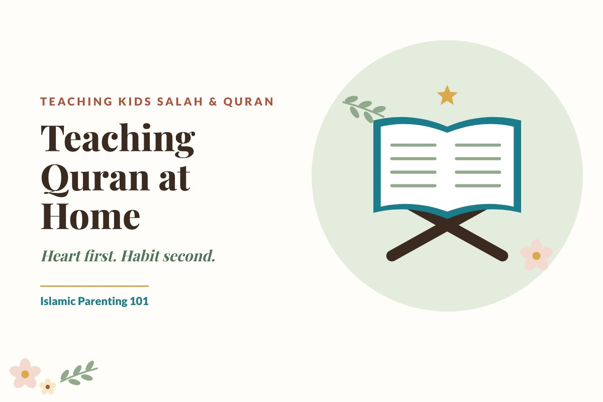

Part of the guide: How to Teach Kids Salah: A Complete Guide by Age
How to Teach Quran to Kids at Home: A Gentle Guide

You want your children to love the Quran. But life is busy, you are not a trained teacher, and your child’s attention lasts about as long as a hiccup. You wonder whether you should enrol them in classes, find an app, or try to teach them yourself, and you worry about doing it wrong.
Good news: you do not need to be a scholar to help your children fall in love with the Quran. You need a warm routine, patience and a few simple tools. This guide shows you how to teach Quran to kids at home, by age, in small daily steps. It is part of our guide How to Teach Kids Salah by Age.
A note: correct recitation (tajweed) is best learned from a qualified teacher, in person or online. What you do at home builds love, familiarity and habit, and it supports whatever a teacher does.
Why the Quran at Home Matters
The Prophet ﷺ said, “The best among you are those who learn the Quran and teach it” (Sahih al-Bukhari). He also said that whoever recites a letter of the Book of Allah earns a good deed, and each good deed is multiplied by ten (Sunan at-Tirmidhi, graded hasan sahih).
And for the child who finds it hard, there is beautiful comfort: “The one who recites the Quran skilfully will be with the noble righteous angels, and the one who recites it with difficulty, stumbling over it, will have a double reward” (Sahih al-Bukhari and Sahih Muslim). Struggle is rewarded, not ridiculed.
Allah also tells us, “We have made the Quran easy for remembrance. Is there anyone who will remember?” (Quran 54:17).
The Golden Rule: Love First
If your child associates the Quran with tears and shouting, they will avoid it for years. If they associate it with your lap, a cosy cushion and your smile, they will return to it for a lifetime. So aim for these three feelings: safe, successful, special.
A Simple Daily Quran Routine (10–15 minutes)
Here is a routine that works for most families:
- Pick a regular time and place. After Fajr, after Maghrib, or before bed. Same spot daily: a rug, cushions, a special “Quran basket” with a Mushaf, a bookmark and a small treat.
- Start with Bismillah and a short du’a: “Rabbi zidni ‘ilma” (My Lord, increase me in knowledge, Quran 20:114).
- Listen first. Play a few verses recited by a good reciter, or read them yourself.
- Repeat after me. Say a line, they repeat. Keep it very short.
- Review. Revisit yesterday’s verses.
- Meaning and story. Share one sentence about what it means.
- Praise and end. “Alhamdulillah. You did so well. See you tomorrow.”
By Age: What to Do
Toddlers (1–3): Surround Them With Sound
- Play gentle Quran recitation during play, car rides and bedtime.
- Say “Bismillah” and “Alhamdulillah” often and enthusiastically.
- Let them hold a child-friendly Mushaf, kiss it and put it carefully back on the shelf.
- Teach tiny phrases: “Subhan Allah,” “Allahu Akbar.”
Preschool (4–6): Make It Playful
- Introduce the Arabic alphabet through songs, flash cards, magnetic letters or sand-writing.
- Teach short surahs by ear: Al-Fatihah, Al-Ikhlas, Al-Falaq, An-Nas. Repetition is the key.
- Read picture books about the Prophets and the stories in the Quran.
- Use movement: stand for Allahu Akbar, bow for subhana rabbiyal-azim.
- Keep sessions to 5–10 minutes.
Early Primary (7–9): Build the Habit
- Begin reading simple Arabic with a qualified teacher or a trusted structured program, and support their lessons at home.
- Set a memorisation goal of one short surah or a few verses each week, with daily review.
- Teach the meaning of what they memorise in simple language.
- Use a sticker chart or Quran journal to track progress. Our printables include habit trackers you can adapt.
Older Kids (10–12): Understanding and Ownership
- Encourage them to read Quran daily, even one page.
- Study the translation and a child-friendly tafsir (explanation) together.
- Connect verses to real life: “This ayah is about patience. When did you need patience today?”
- Let them choose their own goal and system. Ownership increases motivation.
Teens (13+): Reflection and Choice
- Offer, don’t force. Invite them to join a family Quran night or listen to a podcast of reflection.
- Encourage them to connect with a mentor or study circle.
- Respect their questions, and treat them seriously. The Quran invites reflection (Quran 47:24).
- Share how the Quran helps you in your own struggles.
Memorisation Tips That Work for Busy Moms
- Short and often beats long and rare. Five minutes daily beats one hour weekly.
- Listen, listen, listen. Playing the same verses repeatedly while they play or eat quietly builds memory.
- Review old before new. Revising yesterday’s lines locks them in.
- Use rhythm and gestures for younger children.
- Memorise in small chunks: one line, then two, then three.
- Celebrate effort, not only perfection.
- Pray with it. Reciting new surahs in salah deepens retention.
Making It Joyful
- Quran picnic: read outdoors with snacks.
- Mystery verse: hide a verse on a card and let them find it.
- Family circle: each person reads one verse in turn.
- Quran and colour: draw or paint what a verse makes them feel.
- Story time: tell Quranic stories (Yusuf, Ibrahim, Maryam) with a calm voice and a soft toy.
Common Mistakes
- Comparing children. Each child moves at their own pace.
- Harsh correction. Correct gently and once, then praise.
- Using the Quran as a threat. Never use it as a punishment.
- Skipping meaning. Understanding brings love.
- Putting the whole load on a teacher. Your home support matters.
- Expecting perfection. Mistakes are part of learning.
When It’s Hard
Some children struggle with reading, attention, anxiety or learning differences. That’s okay, and it is no reflection on their iman. Talk to a teacher, school specialist or doctor, break tasks into smaller pieces, and lean on listening and understanding in addition to reading. Remember the hadith of the double reward for the one who struggles.
Your One Step This Week
Choose one short surah and one daily five-minute slot. Listen together every day this week. That’s it.
For a complete gentle plan with routines and du’as, see my book Hearts Before Habits, and read Daily Duas for Kids for the everyday words that go with it. You may also like Islamic Parenting: The Complete Guide.
This article shares general guidance from the Quran and Sunnah for parents. It is not a religious ruling, or medical or psychological advice. For fiqh questions please ask a qualified scholar, and for health or development concerns please speak to a professional. Disclaimer
Get the free Calm Mama Starter Kit
4 printable cards for calmer days: phrases, Sunnah calm-down steps, a bedtime routine and a weekly planner.

This article draws on Hearts Before Habits — a complete Islamic parenting guide with scripts, du'as, printables and a 30-day plan.
See the book Free printables Recommended booksKeep reading

How to Teach Kids Salah: A Complete Guide by Age
How to teach kids salah the gentle way — what to do from toddler to teen, the Sunnah behind it, real scripts and a simple routine you can start tonight.
Read the article →
How to Get Kids Up for Fajr Without a Fight
How to get kids up for Fajr gently — sleep tips, a calm wake-up routine, the Sunnah's example and scripts by age, so mornings stop being a battle.
Read the article →
Daily Duas for Kids: 12 Easy Duas Every Muslim Child Can Learn
Daily duas for kids — 12 short, authentic supplications for eating, sleeping, leaving home and more, with meanings and simple ways to teach them.
Read the article →